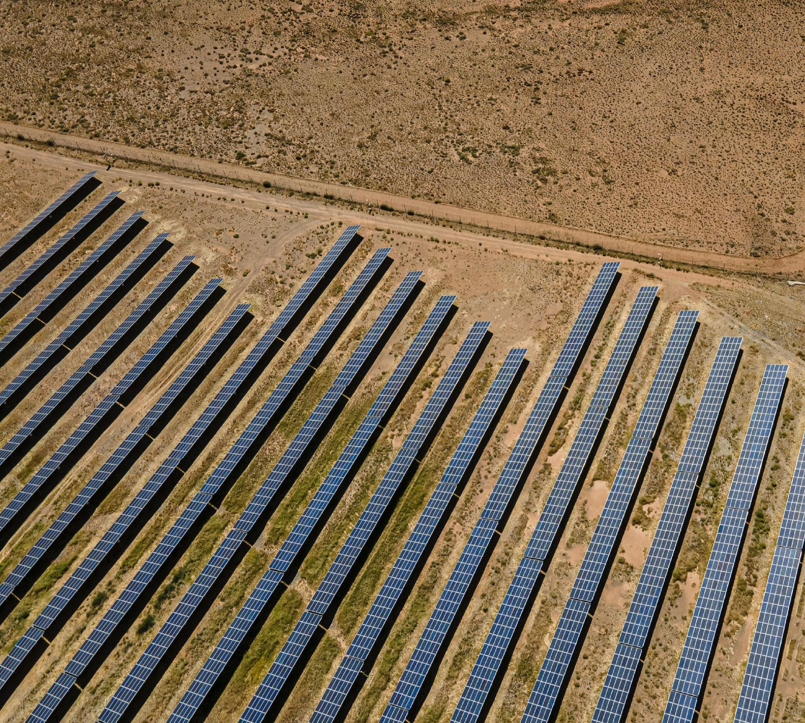

Insights.
Practical thinking on reform, reputation and investment in Africa, written for the people who have to act on it.

Latest insights
Soft power in the age of the algorithm: how African nations can own their story
Reputation is now formed in feeds, not foreign ministries. A practical view on narrative, credibility and consistency.
Full piece to followBeyond the roadshow: what investors need from a first meeting with government
Clarity on priorities, a named counterpart and a credible next step matter more than a glossy deck.
Full piece to followThe AfCFTA and the next decade of market access
The largest free trade area in the world by member countries is moving from treaty to practice. What changes for investors?
Full piece to follow
Reputation is infrastructure: why perception shapes the cost of capital
How a country is seen affects what it pays to borrow and who chooses to build there.
Full piece to follow
The first hundred days: setting a delivery agenda that survives contact with reality
New administrations have a short window. A guide to choosing priorities and building the machinery early.
Full piece to follow
Power, policy and the energy transition: choices for African governments
Energy access, industrial ambition and climate finance are converging. The policy choices are sharper than ever.
Full piece to follow
Africa's cities as the new front door of the nation
For many visitors and investors, the capital city is the country. What that means for national positioning.
Full piece to follow
The centre of government: the quiet engine of reform
Cabinet offices and presidencies rarely make headlines, yet they decide whether priorities survive the year.
Full piece to follow
Partnerships that last: aligning investor returns with national priorities
The strongest deals are the ones both sides can defend in public, five years on.
Full piece to followNo pieces in this category yet.
New thinking, occasionally. Never noise.
Demo: sign-ups are not stored yet.